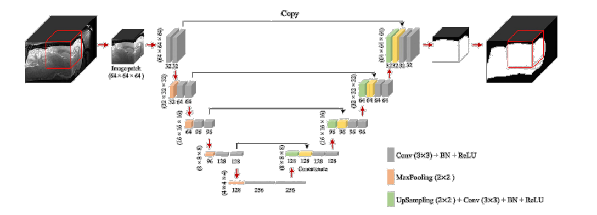
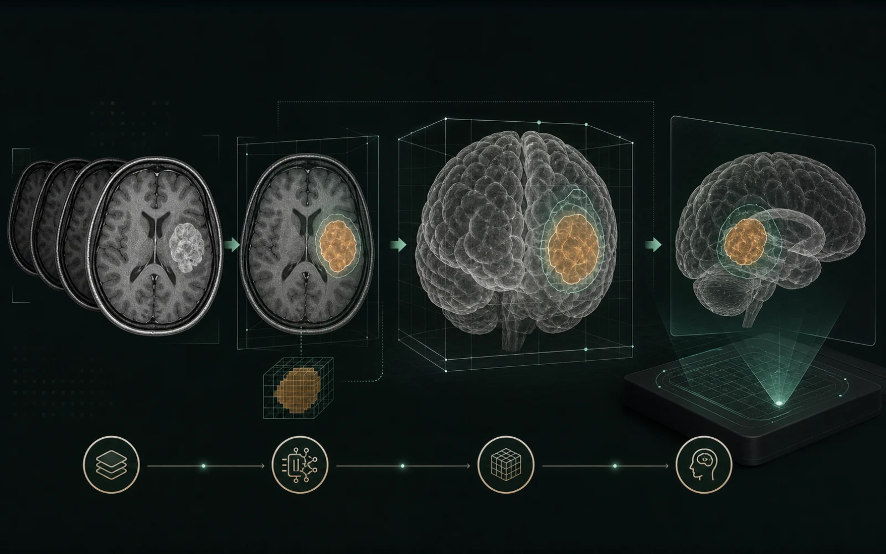

Where medicine met engineering.
Five years at Cairo University shaped how I approach medical imaging, intelligent software, and technology designed for real clinical environments.

The foundation
Biomedical engineering taught me to move between disciplines: to understand the physiology behind a problem, the signals and images that represent it, and the software systems that can make that information useful.

Learning across systems
From anatomy to algorithms
The early curriculum built a base in anatomy, physiology, physics, electronics, signals, and instrumentation. Later courses connected those foundations to medical imaging, device design, software development, and healthcare information systems.
That combination changed how I solve technical problems. A useful healthcare system needs more than an accurate model: it also needs reliable data, a clear interface, careful validation, and an understanding of the people who will use it.

Technical direction
Medical imaging became my bridge to AI
Imaging projects brought together the parts of engineering I enjoyed most: visual data, signal processing, computer vision, model evaluation, and product development. I worked with MRI and DICOM workflows while learning how CNNs and segmentation architectures can surface clinically meaningful patterns.
This work led naturally toward applied machine learning and later toward the data pipelines, APIs, deployment practices, and monitoring required to turn a model into a dependable system.
Capstone
3D brain-tumor segmentation and AR visualization
For my final engineering capstone, our team connected deep-learning segmentation and classification with a custom DICOM viewer and an augmented-reality experience for interactive 3D exploration. The project was selected as a finalist for Best Engineering Capstone Project.
Read the full capstone story →
What stayed with me
An engineering mindset built for real constraints
- Translate clinical and operational needs into testable technical requirements.
- Evaluate models with attention to data quality, limitations, and explainability.
- Connect research prototypes to usable software and visualization workflows.
- Work across disciplines and communicate decisions to technical and non-technical collaborators.
Looking forward
Cairo University gave me the multidisciplinary foundation I now bring to AI, MLOps, data engineering, and product development. I still approach every system with the same question: how can the technology be rigorous enough for the problem and clear enough for the person using it?